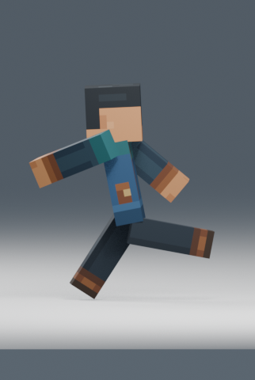

Normal speed first: 24 FPS, 1.0×. Walk: 0.666667 s. Sprint: 0.541667 s. V1 remains unchanged. Technical validation is not artistic approval.
Review evidence was decoded and inspected as ordered images; continuous real-time motion was not directly observed by the assistant. Use these videos to judge feel, weight and any distracting hovering.
Project camera angle, enlarged for diagnosis. Reference column remains the original front take; no source footage exists from our project camera.Frame diagnosis: gameclose
Project camera angle, enlarged for diagnosis. Reference column remains the original front take; no source footage exists from our project camera.Frame diagnosis: gameclose
14.5 vertical units, 1280×720. View at 100% to judge character readability; enlarged comparisons above serve a different purpose.
Rigid-leg limitation
Sprint V2 f1 (0.000 s) gathers in front projection, but side view retains a long straight rear segment. The source topology is unknown. A knee could fold the lower silhouette independently; this first pass does not establish that a rig change is worth its cost.

Blender: R2S_Front_V1_V2 or R2S_Gameplay_V1_V2. Space plays 24 FPS; frame range 1–208. All existing Actions and source assets preserved. Stop for human review.